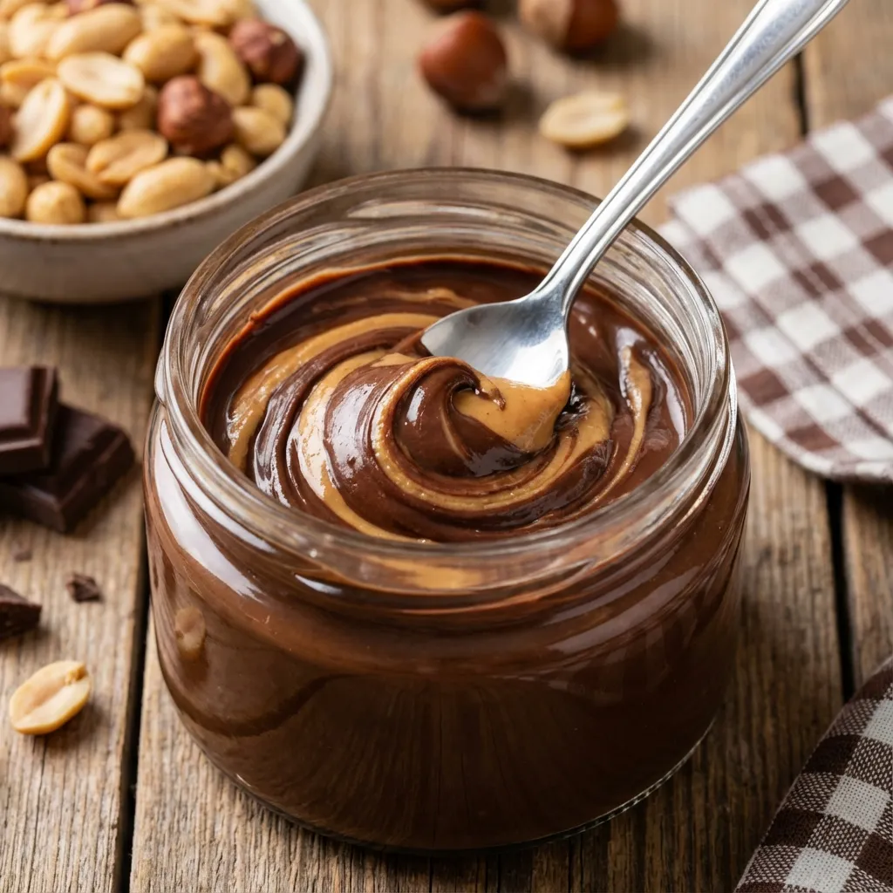
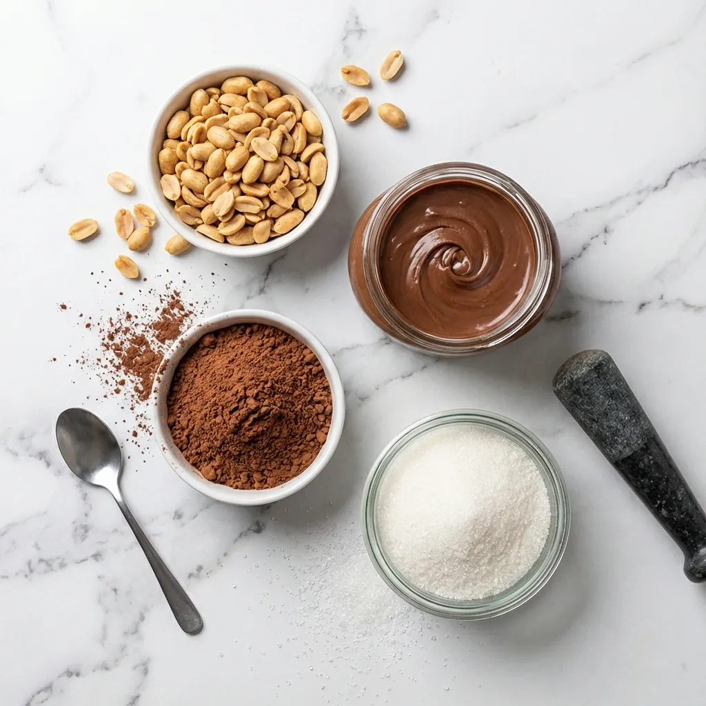
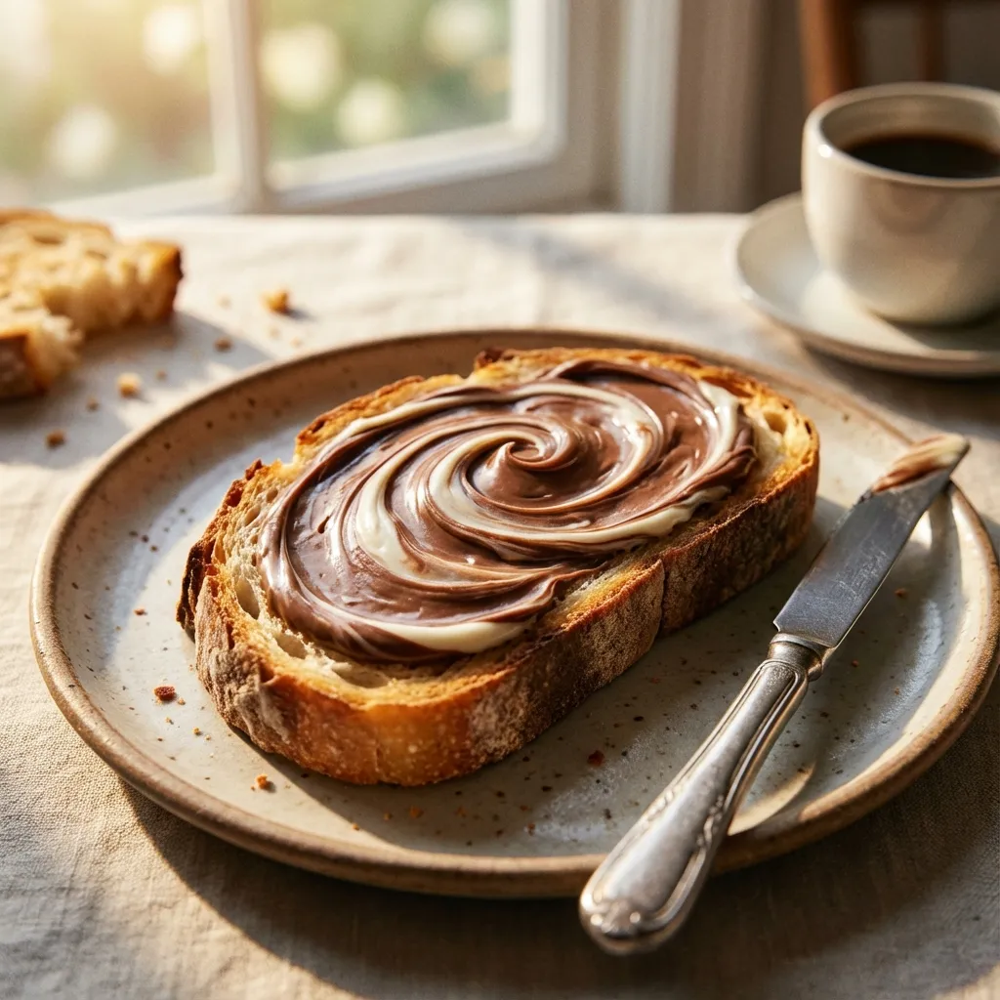

Recetas Saludables con Nucita y Cacahuates: Snacks Nutritivos y Energéticos
La nucita es un dulce tradicional elaborado a base de cacahuate que, cuando se prepara de manera saludable, se convierte en un snack nutritivo rico en proteínas vegetales, grasas saludables y minerales esenciales. Esta receta casera elimina azúcares refinados y conservantes, transformando un dulce procesado en una alternativa consciente para satisfacer antojos mientras cuidas tu salud.

📊 Datos Generales
⏱️ Tiempo de Preparación: 15 minutos
🔥 Cocción: 15 minutos
⏰ Total: 30 minutos
🍽️ Porciones: 4 personas
📈 Calorías: 220 kcal por porción | Proteína 15g | Carbohidratos 18g | Grasas saludables 10g
🥜 Ingredientes
- 1 taza de cacahuates naturales sin sal (150g)
- 3 cucharadas de miel de abeja pura
- 2 cucharadas de cacao en polvo sin azúcar
- 1 cucharada de aceite de coco
- 1 cucharadita de extracto de vainilla
- Pizca de sal del Himalaya
- 2 cucharadas de semillas de chía (opcional)

👨🍳 Preparación Paso a Paso
- Tostar cacahuates: Precalienta el horno a 160°C. Extiende los cacahuates en una bandeja y tuesta durante 8-10 minutos hasta que estén dorados y fragantes. Remueve ocasionalmente para evitar que se quemen.
- Preparar la mezcla base: En un procesador de alimentos, tritura los cacahuates tostados durante 5 minutos hasta obtener una textura semi-cremosa con algunos trozos pequeños para dar textura.
- Incorporar endulzante: En una sartén a fuego medio, calienta la miel con el aceite de coco hasta que se mezclen bien (2-3 minutos). No dejes que hierva.
- Combinar ingredientes: Agrega el cacao en polvo, vainilla y sal a la mezcla de miel. Incorpora los cacahuates procesados y las semillas de chía si las usas. Mezcla bien durante 2 minutos a fuego bajo.
- Moldear: Vierte la mezcla en un molde pequeño forrado con papel encerado. Presiona firmemente con una espátula para compactar.
- Enfriar: Refrigera durante 2 horas hasta que endurezca completamente.
- Servir: Corta en porciones cuadradas y disfruta. Guarda en recipiente hermético en el refrigerador hasta por 2 semanas.

💪 Información Nutricional Destacada
Los cacahuates son legumbres con un perfil nutricional excepcional:
- Proteína vegetal completa: 15g por porción que ayudan a la reparación muscular y saciedad prolongada
- Grasas monoinsaturadas: Beneficiosas para la salud cardiovascular, reducen el colesterol LDL
- Vitamina E: Potente antioxidante que protege las células del daño oxidativo
- Magnesio: Apoya más de 300 reacciones enzimáticas, ideal para deportistas
- Fibra dietética: Mejora la digestión y controla los niveles de azúcar en sangre
- Resveratrol: Antioxidante presente también en el vino tinto, con propiedades antiinflamatorias
- Bajo índice glucémico: No provoca picos de azúcar, ideal para diabéticos
✨ Tips y Variaciones
- Versión crujiente: Añade arroz inflado o quinoa pop para mayor textura y volumen sin calorías adicionales
- Variante especiada: Agrega 1/2 cucharadita de canela o gochugaru para un toque picante único
- Cobertura de chocolate: Derrite chocolate oscuro 85% y baña las piezas para una versión más indulgente
- Con frutos secos mixtos: Sustituye la mitad de cacahuates por almendras o nueces para variar nutrientes
- Boost proteico: Añade 2 cucharadas de proteína de suero sin sabor para aumentar el contenido proteico a 20g por porción
- Versión sin azúcar: Reemplaza la miel por eritritol líquido o stevia para una opción cetogénica
- Tips de conservación: Envuelve individualmente cada porción en papel encerado para snacks portátiles perfectos pre o post-entreno
- Hidratación: Acompaña con abundante agua o bebidas sin azúcar para facilitar la digestión de las proteínas y fibra
Esta versión casera de nucita elimina los azúcares refinados, aceites hidrogenados y conservantes presentes en productos comerciales, ofreciendo una alternativa mucho más saludable que satisface el antojo de dulce mientras aporta nutrientes valiosos. Es perfecta como snack entre comidas o pre-entreno, proporcionando energía sostenida sin comprometer tu salud.
💚 Encuentra Cacahuates Orgánicos en Amazon
Descubre cacahuates naturales sin sal, cacao puro y otros ingredientes de calidad para preparar tu nucita saludable casera.
Ver Productos en Amazon →